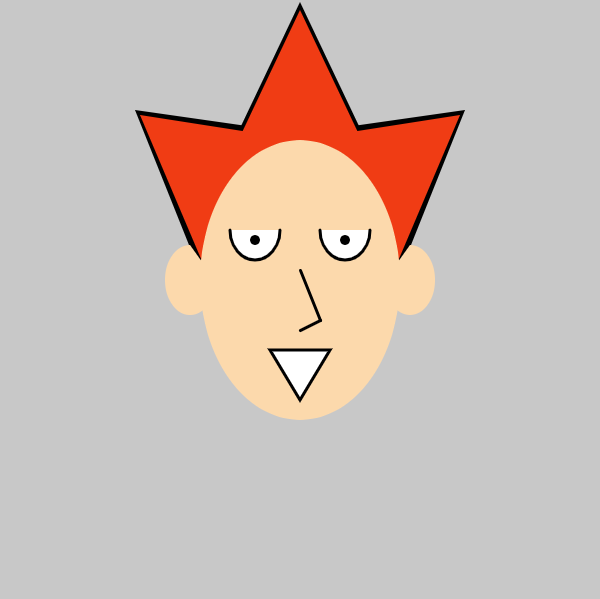

This self portrait was made by using Processing and P5js. A completed code can be found under this portrait.
 function setup()
{
createCanvas(600, 600);
angleMode(DEGREES);
}
function draw()
{
background(200);
//Hair
noStroke()
//Edge
fill(0);
triangle(207, 290, 310, 135, 135, 110);
triangle(393, 290, 290, 135, 465, 110);
triangle(202, 208, 398, 208, 300, 2);
//Hairstyle
fill(240, 60, 20);
triangle(210, 280, 300, 140, 140, 115);
triangle(390, 280, 300, 140, 460, 115);
triangle(210, 200, 390, 200, 300, 10);
//Face
noStroke()
fill(252, 217, 172);
ellipse(300, 280, 200, 280);
//Ears
noStroke()
fill(252, 217, 172);
arc(190, 280, 50, 70, 0, 270, OPEN);
arc(410, 280, 50, 70, 270, 540, OPEN);
//Eyes
stroke(1);
fill(255);
arc(255, 230, 50, 60, 0, 180);
arc(345, 230, 50, 60, 0, 180);
//pupil
noStroke();
fill(0);
ellipse(255, 240, 10, 10);
ellipse(345, 240, 10, 10);
//nose
stroke(1);
strokeWeight(3);
line(300, 270, 320, 320);
line(320, 320, 300, 330);
//mouth
stroke(1);
fill(255);
triangle(300, 400, 270, 350, 330, 350);
}